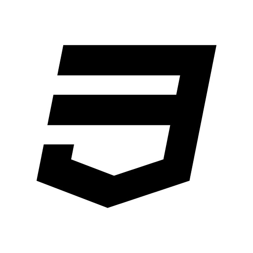

HTML5 Game Development
Yu Xiang Wang
Oct 14, 2012
网页游戏介绍
网页游戏，又称Web游戏、Web Game、页游等。是基于浏览器来开发的一种游戏，主要特点有：
- 依赖浏览器
- 无需下载客户端
- 程序云端更新
- 操作简单，容易上手
- 面向大众，非专业化
- 资源片段化
- 混合开发技术
网页游戏开发介绍
在HTML5以前，HTML技术基本上没有太多丰富的接口和标准，导致产生很多的利用第三方插件开发的网页游戏，
现在基本上日常我们所说的webgame，大部分都是只flash游戏，也正是没有HTML5这些标准，FLASH在以前的PC系统中有着举足轻重的地位。
可以开发webgame的技术有：
- FLASH : Adobe
- Silverlight : 微软出的类似Flash的浏览器插件
- O3D : Google出的一种基于网页的可控3D标准
- SVG : W3C的标准，性能还是有点薄弱
- 还有很多冷门的....
HTML5游戏开发技术
HTML5技术是在有浏览器对标准的支持的前提下，使用HTML标记语言 、JavaScript语言 、CSS布局等混合而成的一种开发技术。
使HTML5成为可以开发web游戏的可能的技术点有：
- Canvas : 画布，可以在canvas上画很多以前做不到的东西
- Storage : Web SQL Database / Web Storage / Session Storage
- Offline ：web离线缓存技术
- WebSocket : web与服务器Socket通讯
- Multimedia ：Audio / Video
- WebWorker ：多线程执行JavaScript程序，对web应用程序性能有很大的提升
- CSS3 ： 在HTML5技术发展的同时，CSS3也不甘落后，有相当强悍的发展
这次主要分享的是Canvas技术。
Canvas绘图开发 - 准备
<!DOCTYPE html>
<html>
<body>
<!--定义canvas的标记语句-->
<canvas id="canvas" width="800" height="600">
你的浏览器不支持canvas元素。
</canvas>
</body>
</html>
<script type='text/javascript'>
//获取canvas的DOM
var canvas = document.getElementById('canvas');
//获取canvas的context对象
var ctx = canvas.getContext("2d");
// TODO: 现在可以对canvas的context进行操作了
</script>
Canvas绘图开发
Rect Cirycle Beizer ColorStyle Image CreatePattern Text Animation Clear
HTML5游戏实例开发
- 游戏引擎 ： https://github.com/Visolleon/GameBase
- 开心鬼大作战 ：http://happyghost.sinaapp.com
- 泡泡堂 ： http://visolleon.sinaapp.com
- 吃豆人游戏 ： 详细开发介绍
DART语言介绍
Dart是谷歌开发的用于浏览器编程的一门语言，在web富应用发展到今天，前端开发显得异常的重要，
而目前浏览器支持的语言只有JavaScript（当然这里不讨论flash等第三方插件），但JavaScript语言本身存在一些缺陷，
因此为了解决JavaScript语言本身的缺陷，各大有实力的浏览器商家都推出自己的前端语言：
微软推出了：TypeScript语言
Google推出了： DART语言
等等...
虽然我们反感这些厂商都各自推出自己的开发语言，但是不得不承认，在做比较大的WebApp的时候，总是会遇到语言本身的缺陷问题。
DART开发语言简介
官方网站： http://www.dartlang.org
文档教程： http://www.dartlang.org/docs/language-tour
开发工具： DART Editor
DART虚拟机 ： 目前开发工具DART Editor中自带有DART虚拟机的Chromium浏览器
main方法
// This is where the app starts executing.
main() {
var number = 42; // Declare and initialize a variable.
printNumber(number); // Call a function.
}
// Define a function.
printNumber(num smallNumber) {
assert(smallNumber < 100); // Check our assumptions.
print("The number is $smallNumber."); // Print to the console.
}
有main方法，这是入口，有点像C语言吧！
Code from: http://www.dartlang.org/docs/language-tour
定义变量
var name = 'Bob'; int lineCount; String name = 'Bob'; final name = 'Bob'; // Or: final String name = 'Bob'; name = 'Alice'; // ERROR
var 定义变量，又有点类似JavaScript...
不过又有int, String等类型....
DART语言内置类型： String, int, bool, list , map
Code from: http://www.dartlang.org/docs/language-tour
函数
String say(String from, String msg) => "$from says $msg";这一句话就是一个方法，这很像C#里的lambda表达式！
上面的代码等价于：
say(from, msg) {
return "$from says $msg";
}
有点小意思了吧...
Code from: http://www.dartlang.org/docs/language-tour
可选参数
String say(String from, String msg, [String device]) {
var result = "$from says $msg";
if (device != null) {
result = "$result with a $device";
}
return result;
}
个人觉得这个，JavaScript比DART要爽一些，JavaScript参数可以随便写；烦了，不写也行...
Code from: http://www.dartlang.org/docs/language-tour
异常处理
throw new IllegalArgumentException('Value must be greater than zero');
throw "Out of llamas!";
抛出异常...
try {
breedMoreLlamas();
} on OutOfLlamasException catch (e) { // A specific exception
buyMoreLlamas();
} catch (e) { // No specified type, handles all
print("Something really unknown: $e");
} finally {
cleanLlamaStalls(); // Then clean up.
}
捕获异常，处理异常
Code from: http://www.dartlang.org/docs/language-tour
类
class Point {
num x, y;
}
main() {
var point = new Point();
point.x = 4; // Use the setter method for x.
assert(point.x == 4); // Use the getter method for x.
assert(point.y == null); // Values default to null.
}
啊，类，是不是觉得JavaScript很缺这玩意儿...
Code from: http://www.dartlang.org/docs/language-tour
类的构造函数
class Point {
num x, y;
Point(num x, num y) {
// There's a better way to do this, stay tuned.
this.x = x;
this.y = y;
}
}
简化点：
class Point {
num x, y;
// Syntactic sugar for this.x = x and this.y = y
Point(this.x, this.y);
}
Code from: http://www.dartlang.org/docs/language-tour
继承
class Person {
Person.fromJson(Map data) {
print('in Person');
}
}
class Employee extends Person {
// Person does not have a default constructor;
// you must call super.fromJson(data).
Employee.fromJson(Map data) : super.fromJson(data) {
print('in Employee');
}
}
继承，都懂得...
Code from: http://www.dartlang.org/docs/language-tour
接口
interface Hashable {
int hashCode();
}
class Point implements Hashable {
num x, y;
// Required by Hashable.
int hashCode() {
int result = 17;
result = 37 * result + x.hashCode();
result = 37 * result + y.hashCode();
return result;
}
// Always implement operator== if the class implements Hashable.
bool operator==(other) {
if (other == null) return false;
if (other === this) return true;
return (other.x == x && other.y == y);
}
}
跟Java很像，后面还有一些面向对象方面的，就不多说了...
Code from: http://www.dartlang.org/docs/language-tour
#import | #source | #library
#library('slider_sample'); // Declare that this is a library.
#import('dart:html'); // It uses the html library
#import('../ui_lib/view/view.dart'); // and a view library.
#source('SliderSample.dart'); // Grab the code from SliderSample.dart.
对JavaScript来说，这玩意儿是好东西...
#libray ： 定义一个程序包或者说命名空间也行
#import ： 引用一个程序包
#source ： 引入一个现有的包程序，将程序直接引入本包内编译
演示例子....
Code from: http://www.dartlang.org/docs/language-tour
感谢各位的捧场，希望以后能与大家多多交流, Thank you !